To use Apache Harmony as an installed JRE in Eclipse requires an additional plug-in. The following instructions show the installation process using screen shots from Eclipse 3.3 running on Windows XP.
First you must download and install the Apache Harmony support plug-in from our Eclipse update site,
http://harmony.apache.org/eclipse/update
Start by defining the update site as a remote location in the Eclipse
download manager:
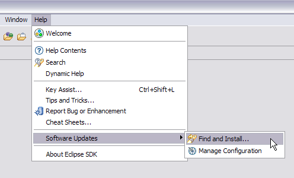
The plug-in is a new feature:
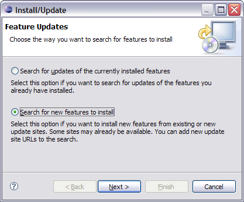
Define the Apache Harmony update site as a new Remote Site:
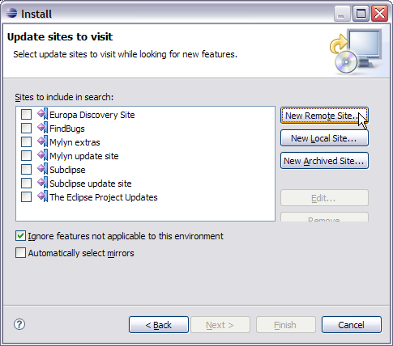
Enter a name of your choice, and the URL
http://harmony.apache.org/eclipse/update
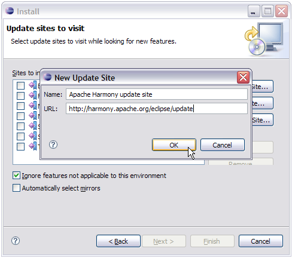
Click OK and Next, then after contacting the Apache
Harmony website you are presented with features to install. Select the
latest Harmony JRE support feature:
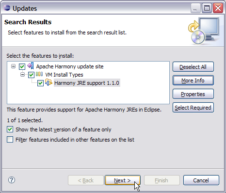
The plug-in is offered under the Apache License v2, which you must
explicitly accept before installing:
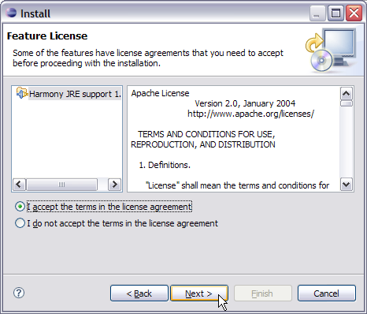
Click Next and Finish. Note that Apache Harmony do not
sign our plug-ins:
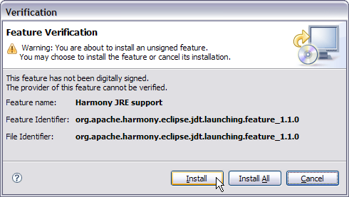
Finally, restart Eclipse to complete the installation of the plug-in:
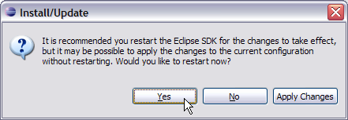
Once the Apache Harmony JRE support plug-in is installed, you can define a new installed JRE type as follows.
From the Windows > Preferences... menu select Installed
JREs:
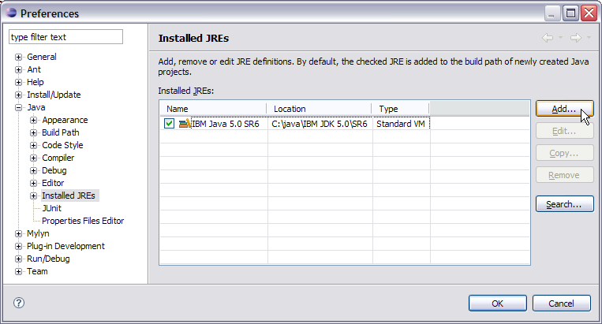
There is now a new JRE type available called Apache Harmony VM:
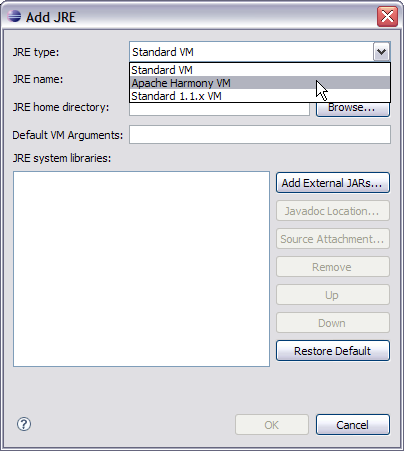
Browse to the Harmony JRE home directory:
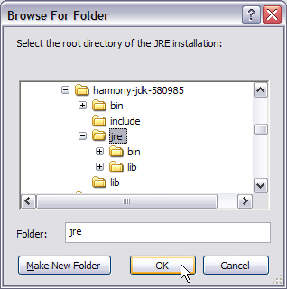
The dialog is filled with the Harmony JRE components. Click
OK and you can now develop against, and run with
Apache Harmony.
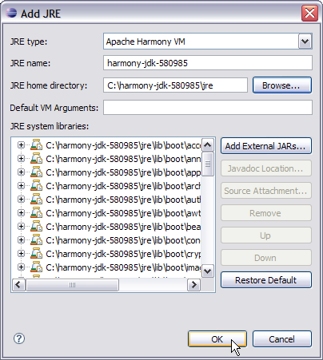